The seven tactics
One question per part. No listening, no reading — just: do you remember the tactic? Answer from memory before you look anything up.
What should you do while you are looking at the photograph, before the statements begin?
- A Read all four statements first.
- B Predict the nouns and verbs you might hear.
- C Choose the statement that repeats a word you can see.
- D Wait until all four statements have finished before deciding.
What is the tactic for choosing between the three responses?
- A Listen for the key words and focus on meaning.
- B Choose the response that uses the same words as the question.
- C Answer only when the response begins with Yes or No.
- D Match the tense of the response to the tense of the question.
What should you do with the time before each conversation starts?
- A Nothing — save your concentration for the recording.
- B Skim the questions and answer choices to predict the context.
- C Write down everything the speakers say.
- D Decide your answers after the conversation has finished.
When should you mark your answer?
- A When the voice tells you to.
- B As soon as you hear the answer, then read ahead.
- C Only after you have heard a number or a date.
- D At the end, all three questions together.
What should you decide before you look closely at the four options?
- A Which option is the longest word.
- B What the whole sentence means in your own language.
- C Which part of speech fits the gap — then use the 2-pass method.
- D Whether the sentence is formal or informal.
Where do you find the information that tells you which tense to use?
- A In the sentence containing the gap only.
- B In the context around the gap, especially time expressions.
- C In the previous sentence — always use the same tense.
- D In the title of the text.
What do you do first, and which questions do you answer first?
- A Read the whole passage carefully, then answer in order.
- B Answer the questions in the order they are printed.
- C Look at the questions first, and do the specific information ones first.
- D Do the NOT true questions first while you are fresh.
Listening checkpoint
You have met these recordings before — that is the point. A week later, at full speed, with no help: how many can you get now? One play each.
Photographs
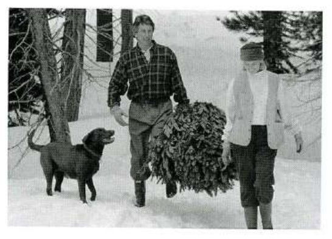
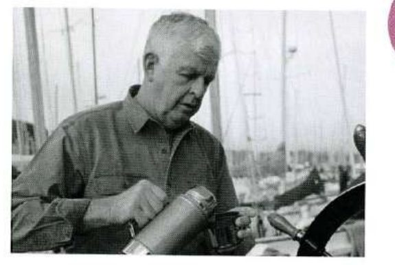
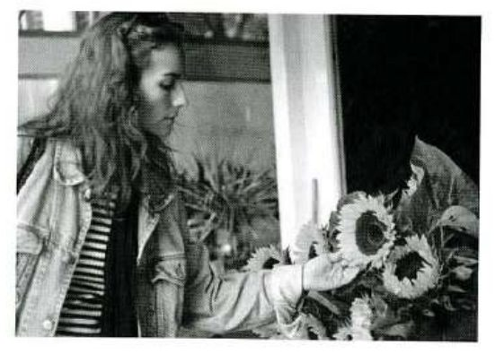
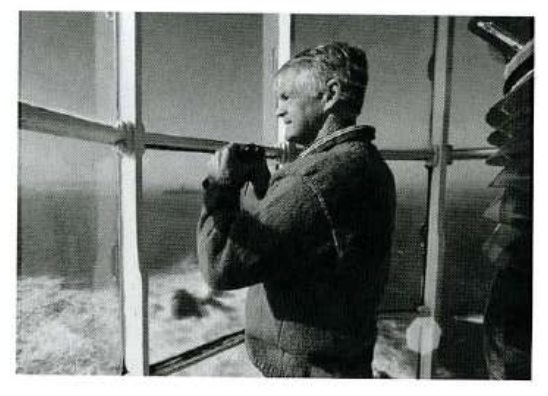
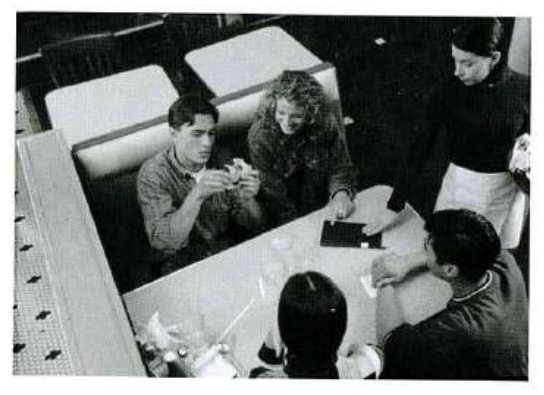
Question–Response
Conversations


Talks
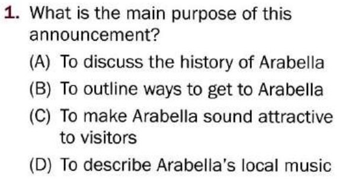
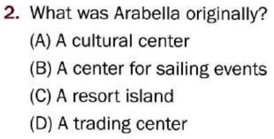
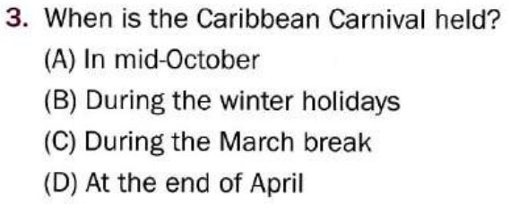
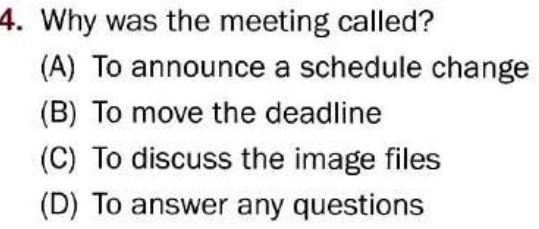
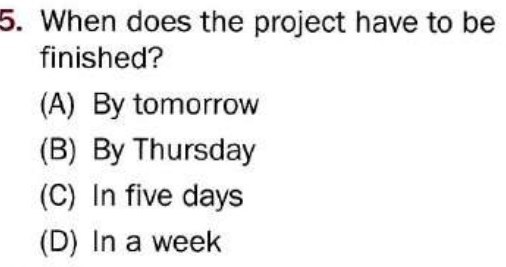
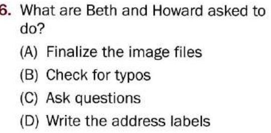
Reading checkpoint
Twenty questions you have never seen, written around the vocabulary from Units 1–7. Start the clock and work straight through Parts 5, 6 and 7.
Incomplete Sentences
1. All withdrawal requests must be submitted in before the second class.
2. The ferry service was interrupted, so ticket holders were offered an refund.
3. Complimentary beverages will be while passengers wait for the shuttle.
4. Sea Star Shipping is not for costs that result from bad weather.
5. Please note that advising an instructor does not a notice of withdrawal.
6. Our technicians on the network since the virus was discovered yesterday.
7. If you your account number, please call the Information Section.
8. The EL301 was popular with new college students.
9. Library cards are available for at the branch you have nominated.
10. The sales meeting to room 401, so please go there instead.
Text Completion
Memo
To: All staff · From: Facilities · Subject: Car park closure
Please be advised that the staff car park (11) ……… for resurfacing from Monday 18 August. The work (12) ……… about two weeks.
During this period, staff may use the Notting Drive lot, (13) ……… is a five-minute walk from the main entrance. Please allow extra time in the morning.
We (14) ……… for any inconvenience and thank you for your patience.
Reading Comprehension
Questions 15–18 refer to the following advertisement.
Alansburg Community Center
Autumn program — registration now open
Classes begin the week of 15 September and run for ten weeks.
- Conversational Spanish — Tuesdays, 6:30–8:00 p.m. — $180
- Digital Photography — Wednesdays, 7:00–9:00 p.m. — $220
- Beginners’ Swimming — Saturdays, 9:00–10:00 a.m. — $150
- Yoga for Beginners — Saturdays, 10:30–11:30 a.m. — $150
Register in person at the main desk, by telephone on 555-2210, or through our website. Payment must accompany registration; we accept cash, check and credit card.
Members of the center receive a 10% reduction on all class fees. Membership costs $40 per year and also gives you unlimited use of the gym and pool.
Please note: withdrawal requests must be received before the second class. Refunds for swimming classes will not be processed until all pool passes have been returned.
15. What is the main purpose of this advertisement?
- A To announce a change to the timetable
- B To describe the center’s facilities
- C To encourage people to sign up for classes
- D To explain the refund policy
16. How much would a member pay for the Digital Photography class?
- A $150
- B $180
- C $198
- D $220
17. Which of the following is NOT a way to register?
- A By telephone
- B By e-mail
- C In person
- D Through the website
18. What must swimming students do before a refund is issued?
- A Attend the second class
- B Return their pool passes
- C Pay a membership fee
- D Write to the main desk
Questions 19–20 refer to the following e-mail.
To: k.oyelaran@alansburgcc.org · From: m.rogers@megaco.example · Date: 2 September · Subject: Beginners’ Swimming
Dear Ms Oyelaran,
I registered for the Saturday Beginners’ Swimming class last week and paid by credit card. I have since been told that I will be traveling for work throughout October, so I am afraid I will miss at least four of the ten lessons.
Would it be possible to move my registration to the same class in the spring term? If that cannot be arranged, I would like to withdraw before the second class, as your notice allows.
I look forward to your reply.
Regards,
Martha Rogers
19. Why is Ms. Rogers writing?
- A To complain about a class
- B To ask about changing her registration
- C To register for a class
- D To request a membership card
20. The word “allows” in paragraph 2, line 2, is closest in meaning to
- A permits
- B admits
- C provides
- D accepts
Vocabulary sprint
Every word from Units 1–7 in one game — 201 of them, once the handful that appear in two units have been counted once. It asks about your weakest words most often, so a short run tells you exactly which unit’s vocabulary has not stuck.